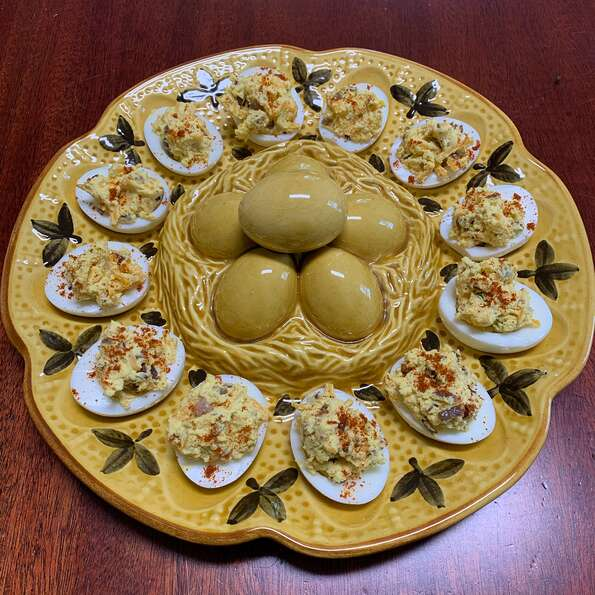

Deviled Eggs

Description
These quick and easy loaded deviled eggs will be the hit of any picnic!
Ingredients
- 12 eggs
- 1 teaspoon vegetable oil
- 1 small onion, chopped
- 1/4 cup sour cream
- 2 tablespoon mayonnaise
- 1 tablesppon ranch dressing, or to taste
- 1.5 teaspoons Dijon mustard
- 1/2 teaspoon garlic powder
- 1/2 pinch onion powder
- 1/8 teaspoon lemon pepper seasoning
- 1 tablesppon bacon bits, or to taste
- 1 cup finely shredded sharp cheddar cheese
- 1/4 teaspoon paprika, or as needed
Steps
- Place eggs into a large pot and cover with lightly salted water. Bring to a boil and reduce heat to medium; boil eggs for 10 to 12 minutes. Drain the boiling water and fill pot with cold water. After 2 to 3 minutes, pour off water and replace with more cold water. Repeat until eggs are fully chilled, 10 to 15 minutes. Peel eggs.
- Heat vegetable oil in a small skillet over medium heat and cook and stir onion until translucent, about 5 minutes. Remove from heat and let cool.
- Slice eggs in half lengthwise and scoop yolks into a bowl; transfer egg white halves to a plate. Mash egg yolks with a fork; stir in sour cream, mayonnaise, ranch dressing, Dijon mustard, garlic powder, onion powder, and lemon pepper seasoning until yolk mixture is smooth. Stir in sauteed onions, bacon bits and Cheddar cheese.
- Generously fill egg halves with filling and sprinkle each deviled egg with paprika. Refrigerate until chilled before serving.